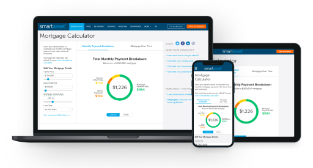
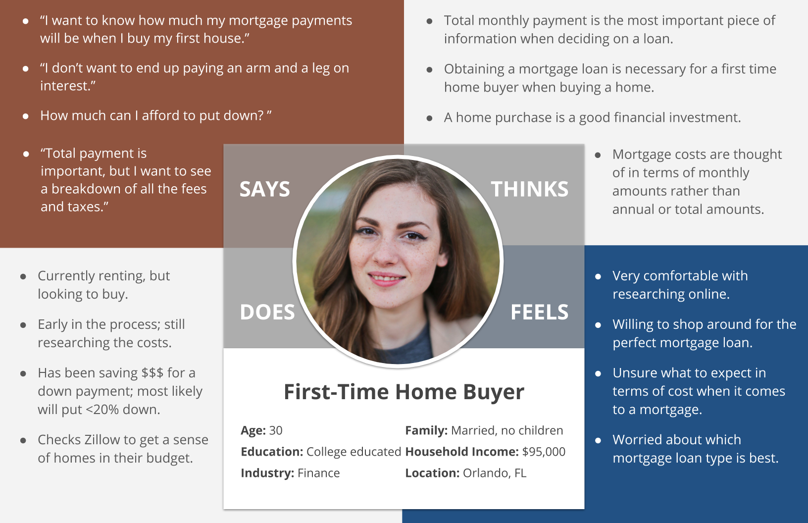
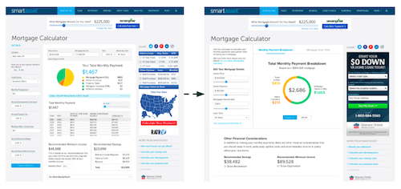

Mortgage Calculator

Author & Stakeholders
Kyrsten G. (UX Researcher), Brian K. (PM), Justin S. (Designer)
Background
SmartAsset’s Mortgage Calculator was redesigned in early 2018 in hopes of improving engagement on the page. The calculator was experiencing low user engagement even though it was a highly trafficked page with a significant number of back links. This search engine optimization (SEO) strategy is typically very successful, so the lack of engagement signaled a user experience (UX) problem. The stakeholders and myself were assigned to improve the overall UX of the calculator in order to drive up user engagement.
Goal
Improve overall UX of SmartAsset’s Mortgage Calculator in order to increase user engagement metrics such as average session duration, organic traffic, and engagements per user.
Research Approach
I conducted all research initiatives associated with SmartAsset’s Mortgage Calculator redesign. User research, while completed at all stage of the project, was focused on two phases - Discover & Explore and Test & Listen. During the Discover & Explore phase, I worked closely with Brian K., the PM, to better understand our user base and the strengths / weaknesses of our calculator and those of our competitors’. During the Test & Listen phase, I worked closely with Justin S., our Designer, to brainstorm and test all design iterations. Ultimately, the research led to a better understanding of our user base and a cleaner, mobile-friendlier Mortgage Calculator design.
-
1. Discover & Explore
- User Surveys: An in-page Google Survey was launched to better understand our user base and their goals, needs, motivations, etc.
- N = 250, individuals on the Mortgage Calculator
- Industry Research: Industry research and white papers (such as Zillow Research) associated with home buying and homebuyers were pulled to validate (or invalidate) in-house research and fill in any gaps in knowledge.
- Usability and Competitive Testing: All testing was conducted remotely using UserTesting.com to gather baseline usability data and feedback on our current Mortgage Calculator and our competitor’s mortgage calculators.
- N = 5 per session, individuals who are in the process of buying a home and have a history of using online home buying resources
- Usability Testing: All iterations of the design were tested remotely using UserTesting.com. Testing focused on usability and comprehension.
- N = 5 per session, individuals who are in the process of buying a home and have a history of using online home buying resources
- NPS and Analytics Review: All relevant engagement metrics and feedback channels were heavily monitored after the new design was released. This was done to track any changes in metrics or uncover any pain points / strengths associated with the new design.
Findings
Discover & Explore: Mortgage Calculator User

The primary user of our Mortgage Calculator is a first-time home buyer, who is early in the home buying process. This user is generally tech and financially-savvy and as a result is interested in all the costs associated with the home buying process.
Test & Listen: Key Findings

- The page felt cramped and overwhelming to users due to the amount of visible content and the background colors. The input, primary and secondary content, and ads are all presented at the same level making the page extremely busy. In addition, the white background is restricted to the main content making the page feel narrow and cluttered.
- The inputs are located in two different areas on the page resulting in a confusing user flow. The inputs found above the main content asks users about their mortgage loan amount rather than their down payment. This field creates significant problems for our users as our primary user on this page is a first-time home buyer, early in the home buying process - in other words, they do not have a mortgage loan at this time.
- While important and valuable, the mortgage over time table was difficult to read and comprehend in its original form.
Results & Next Steps
After launching the newly designed Mortgage Calculator, we saw significant improvements in the page’s Net Promoter Score (NPS), average time on site, organic traffic, and engagements per user. The Mortgage Calculator also ended up on the first page of Google after the redesign for some critical keywords. Due to the success of this redesign, management is now open to redesigning other underperforming calculators in the near future.